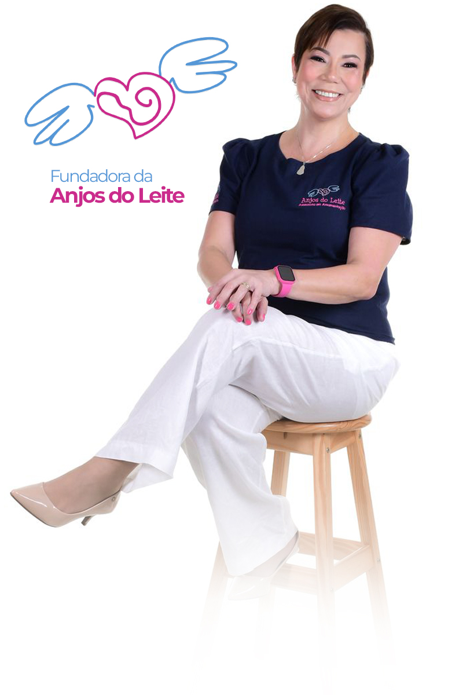

Conheça Sandra Abreu
Ciência, Experiência e Acolhimento a serviço da sua amamentação.

Conhecimento + Experiência + Amor = Seu Sucesso
Olá, eu sou Sandra Abreu, Enfermeira (Enf.) e Pós-Graduada em Aleitamento Materno. Sou a especialista que está ao seu lado para tornar a amamentação uma experiência tranquila, segura e conectada.
Minha paixão nasceu há mais de 25 anos nos cuidados intensivos, com passagens pela UTI Neonatal e Pediátrica da Santa Casa de Santos e Hospital Guilherme Álvaro. Foi no Banco de Leite Humano que entendi a profundidade do meu propósito.
Hoje, dedico-me exclusivamente à amamentação há 8 anos, sendo pioneira na assessoria na Baixada Santista. Meu objetivo é ir além, e por isso, estou cursando Fonoaudiologia para ampliar a excelência técnica no acolhimento de mães e bebês.
"Minha missão não é só resolver problemas, mas acolher, orientar e empoderar você para que amamente ATÉ QUANDO VOCÊS DESEJAREM! Vamos juntas encontrar o SEU caminho?"Fale com a Sandra